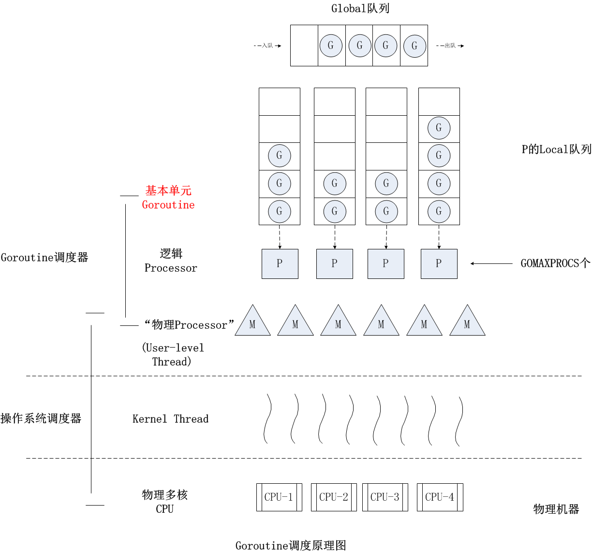

一个 cpu 上能同时执行多项任务，在很短时间内，cpu 来回切换任务执行(在某段很短时间内执行程序 a，然后又迅速得切换到程序 b 去执行)，
有时间上的重叠（宏观上是同时的，微观仍是顺序执行）,这样看起来多个任务像是同时执行，这就是并发。
当系统有多个 CPU 时,每个 CPU 同一时刻都运行任务，互不抢占自己所在的 CPU 资源，同时进行，称为并行。并行是并发设计的
理想模式。
cpu 在切换程序的时候，如果不保存上一个程序的状态（也就是我们常说的 context –上下文），直接切换下一个程序，就会丢失上一个
程序的一系列状态，于是引入了进程这个概念，用以划分好程序运行时所需要的资源。因此进程就是一个程序运行时候的所需要的基本资源单
位（也可以说是程序运行的一个实体）。
cpu 切换多个进程的时候，会花费不少的时间，因为切换进程需要切换到内核态，而每次调度需要内核态都需要读取用户态的数据，进程
一旦多起来，cpu 调度会消耗一大堆资源，因此引入了线程的概念，线程本身几乎不占有资源，他们共享进程里的资源，内核调度起来不
会那么像进程切换那么耗费资源。
多线程和多进程是并行的基本条件，但是单线程可以利用协程做到并发。协程拥有自己的寄存器上下文和栈。协程在线程上通过主动
切换来实现并发，减少了阻塞时间，还避免了线程切换的开销。但协程运行的并发本质上还是串行的。线程和进程的操作是由程序触发系统
接口，最后的执行者是系统；协程的操作执行者则是用户自身程序。
Go 语言在语言层面上支持了并发，简单将 goroutine 归为协程并不合适。Go runtime 会创建多个线程来执行并发任务，而且任务
可以跨线程调度。所以 goroutine 更像是多线程和协程的结合体。
goroutine 可以简单理解为协程，开销较低 (大概是 4~5KB )，当然会根据相应的数据伸缩。也正因为如此，可同时运行成千
上万个并发任务。goroutine 比 thread 更易用、更高效、更轻便。我们程序运行的 main 函数在一个单独的 goroutine 中运行，
叫做 主 goroutine。在代码中可以使用 go 关键字创建 goroutine。
1 | go f() |
main 函数返回时，所有 goroutine 都会被打断，程序退出。除了从 main 函数退出或者直接终止程序之外，没有其它
的编程方法能够让一个 goroutine 来打断另一个的执行，但是之后可以看到一种方式来实现这个目的，通过 goroutine 之间
的通信来让一个 goroutine 请求其它的 goroutine，使被请求 goroutine 自行结束执行。
1 | package main |
上面的代码会打印出什么内容？
回答是：不会有任何内容被打印出来。
Go 语言不但有着独特的并发编程模型，以及用户级线程 goroutine，还拥有强大的用于调度 goroutine、对接系统级线程的
调度器。
调度器的主要有 3 个重要部分，分别是 M、G、P。
runtime.GOMAXPROCS() 来设置，P 的数量决定了系统内最大可并行的 G 的数量，goroutine 可以同时运行。与一个进程总会有一个主线程类似，每一个独立的 Go 程序在运行时也总会有一个主 goroutine。这个主 goroutine 会在 Go 程
序的运行准备工作完成后被自动地启用，并不需要我们做任何手动的操作。
每条 go 语句一般都会携带一个函数调用，这个被调用的函数常常被称为 go 函数。而主 goroutine 的 go 函数就是
那个作为程序入口的 main 函数。
go 函数真正被执行的时间总会与其所属的 go 语句被执行的时间不同。
当程序执行到一条 go 语句的时候，go 关键字并不是执行并发操作，而是创建一个并发任务单元。Go 语言的运行时系统，会先试图从某个
存放空闲的 G 的队列中获取一个 G（也就是 goroutine），它只有在找不到空闲 G 的情况下才会去创建一个新的 G。已存在
的 goroutine 总是会被优先复用。
在拿到了一个空闲的 G 之后，Go 语言运行时系统会用这个 G 去包装当前的那个 go 函数（或者说该函数中的那些代码），然后再把这
个 G 追加到某个存放可运行的 G 的队列中。这类队列中的 G 总是会按照先入先出的顺序，很快地由运行时系统内部的调度器安排运行。
虽然这会很快，但是由于上面所说的那些准备工作还是不可避免的，所以耗时还是存在的。
因此，go 函数的执行时间总是会明显滞后于它所属的 go 语句的执行时间。当然了，这里所说的“明显滞后”是对于计算机
的 CPU 时钟和 Go 程序来说的。我们在大多数时候都不会有明显的感觉。
请记住，只要 go 语句本身执行完毕，Go 程序完全不会等待 go 函数的执行，它会立刻去执行后边的语句。这就是所谓
的异步并发地执行。
上面的代码中那 10 个包装了 go 函数的 goroutine 往往还没有获得运行的机会。但是如果有机会运行，打印的结果是什么，
全是 10？
当 for 语句的最后一个迭代运行的时候，其中的那条 go 语句即是最后一条语句。所以，在执行完这条 go 语句之后，
主 goroutine 中的代码也就执行完了，Go 程序会立即结束运行。那么，如果这样的话，还会有任何内容被打印出来吗？
Go 语言并不会去保证这些 goroutine 会以怎样的顺序运行。由于主 goroutine 会与我们手动启用的其他 goroutine 一起接受
调度，又因为调度器很可能会在 goroutine 中的代码只执行了一部分的时候暂停，以期所有的 goroutine 有更公平的运行机会。
所以哪个 goroutine 先执行完、哪个 goroutine 后执行完往往是不可预知的，除非我们使用了某种 Go 语言提供的方式进行了人为
干预。
刚才说过，一旦主 goroutine 中的代码执行完毕，当前的 Go 程序就会结束运行，无论其他的 goroutine 是否已经在运行了。
那么，怎样才能做到等其他的 goroutine 运行完毕之后，再让主 goroutine 结束运行呢？
time 包，可以简单粗暴的 time.Sleep(time.Millisecond * 500) 让主 goroutine “小睡”一会儿。问题是我们让主 goroutine “睡眠”多长时间才是合适的呢？如果“睡眠”太短，则很可能不足以让其他的 goroutine 运行完毕，
而若“睡眠”太长则纯属浪费时间，这个时间就太难把握了。
sync 包的 sync.WaitGroup 类型首先，我们需要稍微改造一下 for 语句中的那个 go 函数:1
2
3
4
5for i := 0; i < 10; i++ {
go func(i int) {
fmt.Println(i)
}(i)
}
只有这样，Go 语言才能保证每个 goroutine 都可以拿到一个唯一的整数。这里有点像 js。
在 go 语句被执行时，我们传给 go 函数的参数 i 会先被求值，如此就得到了当次迭代的序号。之后，无论 go 函数
会在什么时候执行，这个参数值都不会变。也就是说，go 函数中调用的 fmt.Println 函数打印的一定会是那个当次迭代的序号。
1 | var count uint32 = 0 |
上面的代码中调用了一个名叫 trigger 的函数，并把 go 函数的参数 i 和刚刚声明的变量 fn 作为参数传给了它。func() 代表的是既无参数声明也无结果声明的函数类型。
trigger 函数会不断地获取一个名叫 count 的变量的值，并判断该值是否与参数 i 的值相同。如果相同，那么就立
即调用 fn 代表的函数，然后把 count 变量的值加 1，最后显式地退出当前的循环。否则，我们就先让当前的goroutine “睡眠”一个纳秒再进入下一个迭代。
操作变量 count 的时候使用的都是原子操作。这是由于 trigger 函数会被多个 goroutine 并发地调用，所以它用到的
非本地变量 count，就被多个用户级线程共用了。因此，对它的操作就产生了竞态条件（race condition），破坏了程序的并
发安全性。在 sync/atomic 包中声明了很多用于原子操作的函数。由于我选用的原子操作函数对被操作的数值的类型有约束，所
以对 count 以及相关的变量和参数的类型进行了统一的变更（由 int 变为了 uint32）。
纵观 count 变量、trigger 函数以及改造后的 for 语句和 go 函数，我要做的是，让 count 变量成为一个信号，
它的值总是下一个可以调用打印函数的 go 函数的序号。
这个序号其实就是启用 goroutine 时，那个当次迭代的序号。
依然想让主 goroutine 最后一个运行完毕，所以还需要加一行代码。不过既然有了 trigger 函数，就没有再使用通道。1
trigger(10, func(){})
runtime.Gosched() 暂停，释放线程去执行其他任务。
runtime.Goexit() 立即终止当前任务，runtime 会确保所有 defer 函数被执行。该函数不会影响其他并发任务。
goroutine 被永远卡住，就会导致 goroutine 泄漏，例如当使用了无缓存的 channel，goroutine 因为 channel 的
数据没有被接收而被卡住。泄漏的 goroutine 不会被自动回收。
Go 的 runtime 负责对 goroutine 进行“调度”。调度本质上就是决定何时哪个 goroutine 将获得资源开始执行、哪个 goroutine
应该停止执行让出资源、哪个 goroutine 应该被唤醒恢复执行等。
操作系统对进程、线程的调度是指操作系统调度器将系统中的多个线程按照一定算法调度到物理 CPU 上去运行。C、C++ 等的并发实现就是基
于操作系统调度的，即程序负责创建线程，操作系统负责调度。但是这种支持并发的方式有不少缺陷：
epoll/kqueue/IoCompletionPort 这套机制，即便有 libevent/libev 这样的第三方库帮忙，写起这样的程序也是很不易的Go采用了用户层轻量级 thread 或者说是类 coroutine 的概念来解决这些问题，Go 将之称为 goroutine。
goroutine 占用的资源非常小(goroutine stack 的 size 默认为 2k)，goroutine 调度的切换也不用操作系统内核层完成，代价很低。
所有的 Go 代码都在 goroutine 中执行，go runtime 也一样。将这些 goroutines 按照一定算法放到“CPU”上执行的程序就叫做
goroutine 调度器或 goroutine scheduler。
一个 Go 程序对于操作系统来说只是一个用户层程序，对于操作系统而言，它的眼中只有 thread，它并不知道什么是 Goroutine。
goroutine 的调度全要靠 Go 自己完成，实现 Go 程序内 goroutine 之间“公平”的竞争 CPU 资源，这个任务就落到了 Go runtime 头上，
在一个 Go 程序中，除了用户代码，剩下的就是 go runtime 了。
Goroutine 的调度问题就变成了 go runtime 如何将程序内的众多 goroutine 按照一定算法调度到 CPU 资源上运行了。
但是在操作系统层面，Thread 竞争的 CPU 资源是真实的物理 CPU，但在 Go 程序层面，各个 Goroutine 要竞争的 CPU 资源是什么呢？
Go 程序是用户层程序，它本身整体是运行在一个或多个操作系统线程上的，因此 goroutine 们要竞争的所谓 CPU 资源就是操作系统线程。
Go scheduler 的任务：将 goroutines 按照一定算法放到不同的操作系统线程中去执行。这种在语言层面自带调度器的，我们称
之为原生支持并发。
调度器的主要有 3 个重要部分，分别是 M、G、P。
runtime.GOMAXPROCS() 来设置，P 的数量决定了系统内最大可并行的 G 的数量，goroutine 可以同时运行。（前提：系统的物理 cpu 核数 >= P 的数量），它维护了一个 G 队列（runq），里面存储
简单来说，一个 G 的执行需要 P 和 M 的支持，P 和 M 绑定之后，就形成了一个 G 的运行环境（内核线程和上下文）。
P 和 M 构成执行组合体，但两者的数量并不是一一对应的。一般情况下， P 的数量相对恒定，默认与 CPU 核数相同，可能更多或更少。
M 是由调度器按需创建的。比如，如果一个 M 因系统调用时间长而阻塞，P 就会被监控线程抢走，并且新建一个 M 执行其他任务，M
的数量就增加了。
所有 P 是在调度器初始化阶段创建的，虽然可以使用 runtime.GOMAXPROCS() 在运行期间修改 P 的数量，但是代价很大。
Go 并没有时间片的概念，只是在目标 G 上设置一个抢占标志。如果某个 G 没有进行 syscall、没有进行 I/O 操作、没有阻塞在一
个 channel 操作上，那么 M 是如何让 G 停下来并调度下一个 runnable G 的呢？
答案是：G 是被抢占调度的。
Go 在设计之初并没考虑将 goroutine 设计成抢占式的。用户负责让各个 goroutine 交互合作完成任务。一个 goroutine 只有在涉及到加锁，
读写通道或者主动让出 CPU 等操作时才会触发切换。
垃圾回收器是需要 stop the world 的。如果垃圾回收器想要运行了，那么它必须先通知其它的 goroutine 合作停下来，这会造成较长时
间的等待时间。考虑一种很极端的情况，所有的 goroutine 都停下来了，只有其中一个没有停，那么垃圾回收就会一直等待着没有停的那一个。
抢占式调度可以解决这种问题，在抢占式情况下，如果一个 goroutine 运行时间过长，它就会被剥夺运行权。Go 还只是引入了一些很初级
的抢占，只有长时间阻塞于系统调用，或者运行了较长时间才会被抢占。runtime 会在后台有一个检测线程，它会检测这些情况，
并通知 goroutine 执行调度。
Go 程序的初始化过程中，runtime 开了一条后台线程，运行一个 sysmon 函数(一般称为监控线程)。这个函数会周期性地做 epoll 操作，
同时它还会检测每个 P 是否运行了较长时间。该 M 无需绑定 P 即可运行，该 M 在整个 Go 程序的运行过程中至关重要。
sysmon 每 20us~10ms 运行一次，sysmon 主要完成如下工作：
如果 G 被阻塞在某个 channel 操作或 network I/O 操作上时，G 会被放置到某个 wait 队列中，而 M 会尝试运行下一个 runnable
的 G；如果此时没有 runnable 的 G 供 M 运行，那么 M 将解绑 P，并进入 sleep 状态。当 I/O available 或 channel 操作完成，
在 wait 队列中的 G 会被唤醒，标记为 runnable，放入到某 P 的队列中，绑定一个 M 继续执行。
如果 G 被阻塞在某个 system call 操作上，那么不光 G 会阻塞，执行该 G 的 M 也会解绑 P(实质是被 sysmon 抢走了)，
与 G 一起进入 sleep 状态。如果此时有 idle 的 M，则 P 与其绑定继续执行其他 G；如果没有 idle M，但仍然有其他 G 要去执行，
那么就会创建一个新 M。
当阻塞在 syscall 上的 G 完成 syscall 调用后，G 会去尝试获取一个可用的 P，如果没有可用的 P，那么 G 会被标记为 runnable，
之前的那个 sleep 的 M 将再次进入 sleep。